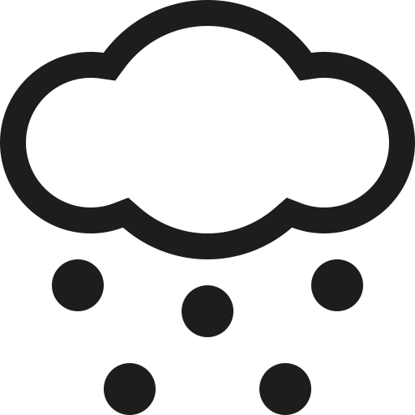

Enmanuel's Website Planning Document
Site Name: Detailed-Weather
Domain Name: www.detailedweather.com
Logo
Site Purpose
The purpose of this site is to provide accurate information about the weather in an easy way. The information on the website will be updated constantly so, people will know the constant changes in the weather. This will come in handy whether someone is planning a trip or just needs to know which kind of cloth needs to wear before going outside.